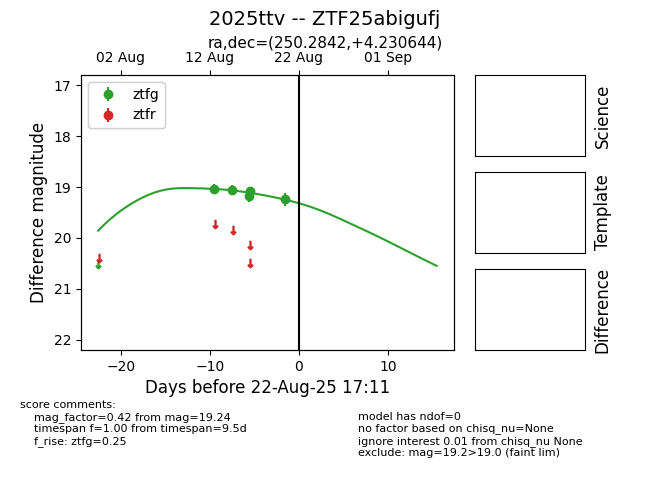

Target 2025ttv at 2025-08-22 17:11, see:
FINK: fink-portal.org/ZTF25abigufj
Lasair: lasair-ztf.lsst.ac.uk/objects/ZTF25abigufj
ALeRCE: alerce.online/object/ZTF25abigufj
TNS: wis-tns.org/object/2025ttv
YSE: ziggy.ucolick.org/yse/transient_detail/2025ttv
alt names
ZTF25abigufj (ztf,alerce)
2025ttv (tns,yse)
coordinates:
equatorial (ra, dec) = (250.2842,+4.23064)
galactic (l, b) = (20.8960,+30.76444)
photometry
last ztfg=19.24
5 ztfg detections
